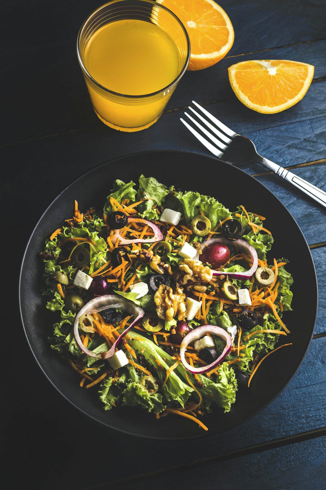
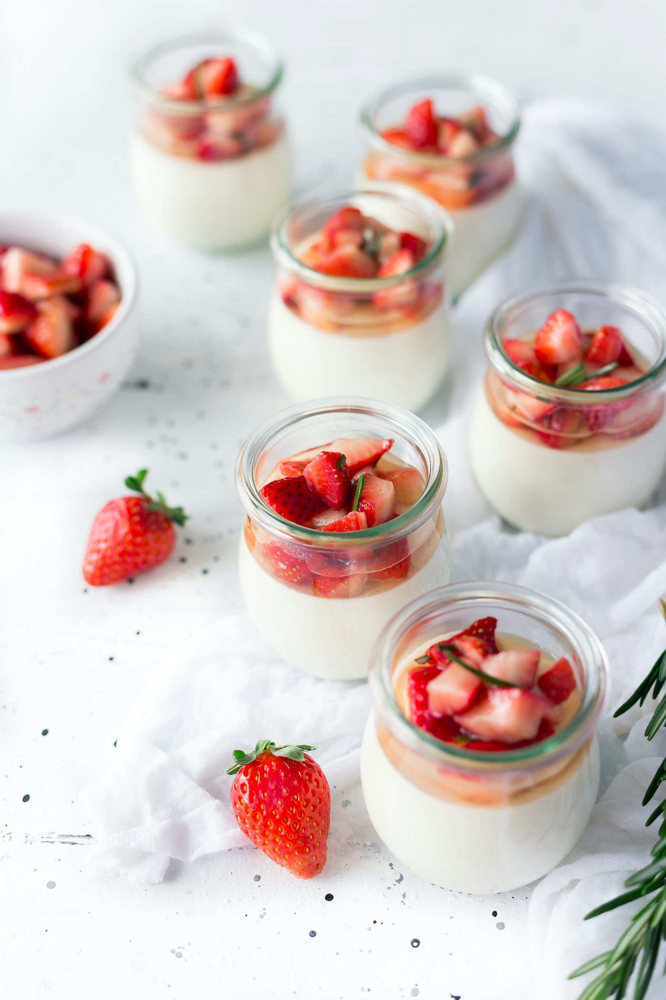

First
Leaf salad, walnut, orange
Bitter leaves, walnut, olive, and a little orange. It is dressed at the table so the leaves stay sharp.
The menu · €78
Four courses, served to the table. Tell us when you reserve if someone does not eat meat. The chop can be replaced with grilled cabbage from the same fire.

First
Bitter leaves, walnut, olive, and a little orange. It is dressed at the table so the leaves stay sharp.

Main
The chop is cooked over the coals and rested. Apple is roasted in the same pan. The greens come at the end, with the juices.

Last
A cool cream in a small glass, fruit cut the same afternoon, and a needle of rosemary. Coffee is included if you want it.